Konturdiagramme und Farbabbildung
Contour-Color-Map
Zusammenfassung
Origin bietet rechteckige, polare und ternäre Konturdiagramme. Für rechteckige Konturdiagramme können sich die Daten entweder in einer Matrix oder in einem Arbeitsblatt in XYZ-Format befinden. Polare Konturdiagramme können aus drei Datenspalten in einem Arbeitsblatt erzeugt werden, entweder als R Z oder R Z. Ternäre Konturdiagramme können aus Arbeitsblattdaten erzeugt werden, die im Format X Y Z Z vorliegen, wobei die 2. Z-Spalte den 4. Parameter enthält, d.h. den Höhenwert bei einem gegebenen XYZ-Punkt im ternären Raum.
Viele Optionen sind für das benutzerdefinierte Anpassen von Konturdiagrammen verfügbar, wie z.B. das Einstellen von verschiedenen Haupt- und Nebenkonturebenen, das Anzeigen von Konturlinien nur auf den Hauptebenen, das Anwenden von Farbpaletten und auch das Festlegen einer benutzerdefinierten Grenze im Fall von Konturdiagrammen, die direkt aus dem Arbeitsblatt erstellt wurden.
Was Sie lernen werden
Dieses Tutorial zeigt Ihnen, wie Sie:
- Werte in einer Matrix setzen und ein Konturdiagramm erstellen,
- Ebenen, Linien und Farbpaletten benutzerdefiniert anpassen,
- Daten aus Konturlinien extrahieren,
- ein Konturdiagramm direkt aus XYZ-Daten erstellen,
- einen benutzerdefinierten Rahmen verwenden.
Ein Konturdiagramm aus einer Matrix erstellen
- Um eine neue Matrix zu erstellen, klicken Sie auf die Schaltfläche Neue Matrix 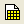. Bewegen Sie die Maus dann zu der oberen linken Ecke der Matrix, bis sich die Form des Zeigers verändert, wie im folgenden Bild zu sehen, und klicken Sie einmal darauf, um die gesamte Matrix zu markieren.
- 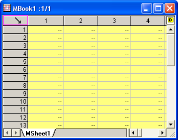
Um die Dimensionen festzulegen, klicken Sie mit der rechten Maustaste und wählen Sie Matrixdimension/Beschriftungen im Kontextmenü. Ändern Sie auf der Registerkarte XY-Abbildung die Einstellung folgendermaßen.
- 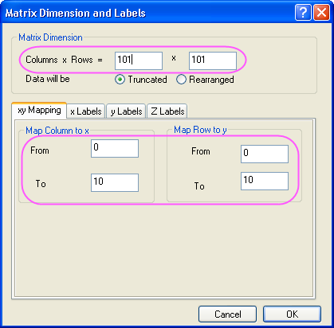
- Geben Sie Daten in die Matrix ein, indem Sie sie markieren und mit der rechten Maustaste auf sie klicken. Wählen Sie Werte der Matrix setzen im Kontextmenü, um den Dialog Werte setzen zu öffnen. Geben Sie i*sin(x) - j*cos(y) in das Bearbeitungsfeld Formel ein und klicken Sie auf OK, um Daten zu erzeugen. Die Matrix sollte folgendermaßen aussehen:
- 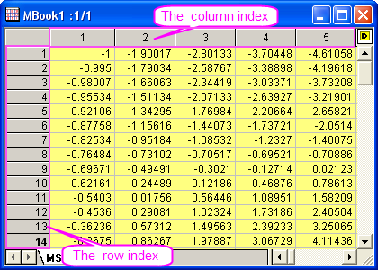
- Jeder Datenpunkt in der Matrix entspricht zwei verschiedenen Arten von Indizes. Eine Art besteht aus dem Spalten- und dem Zeilenindex. Die andere sind die X- und Y-Koordinaten. Um die X- und Y-Koordinaten zu sehen, wählen Sie Ansicht: X/Y zeigen.
- 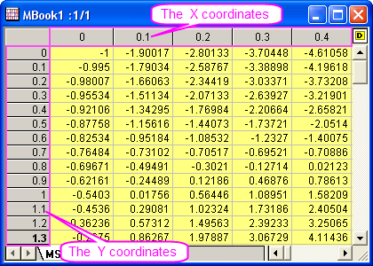
- Sie können aber auch über Ansicht: Bildmodus die Bildform der Matrix anzeigen.
- 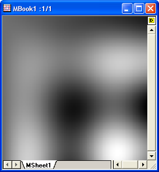
- Wählen Sie Ansicht: Datenmodus, um den Bildmodus zu verlassen. Erstellen Sie ein Konturdiagramm, indem Sie die Matrix aktivieren und Zeichnen: Kontur: Kontur - Farbabbildung auswählen. Das Diagramm sollte folgendermaßen aussehen:
- 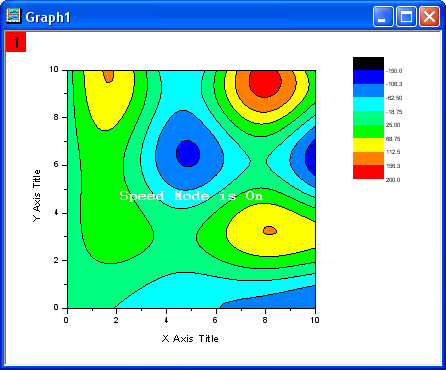
Ebenen, Linien und Farbpalette benutzerdefiniert anpassen
Origin macht die benutzerdefinierte Anpassung der Konturdiagramme sehr einfach und umfasst dabei auch das Ändern der Farbskala und das Hinzufügen von Beschriftungen.
- Aktivieren Sie Graph1 und wählen Sie Grafik: Bearbeitungsmodus, um den Dialog zu öffnen. Setzen Sie den Entwurfsmodus auf Aus und klicken Sie auf OK.
- Klicken Sie auf das Konturdiagramm in Graph1 und dann auf die Schaltfläche Ebenen festlegen in der Minisymbolleiste. Klicken Sie im Dialog Ebenen festlegen auf die Schaltfläche Min./Max. suchen und setzen Sie die Hauptebenen auf 8 und die Nebenebenen auf 32. Klicken Sie auf OK.
- 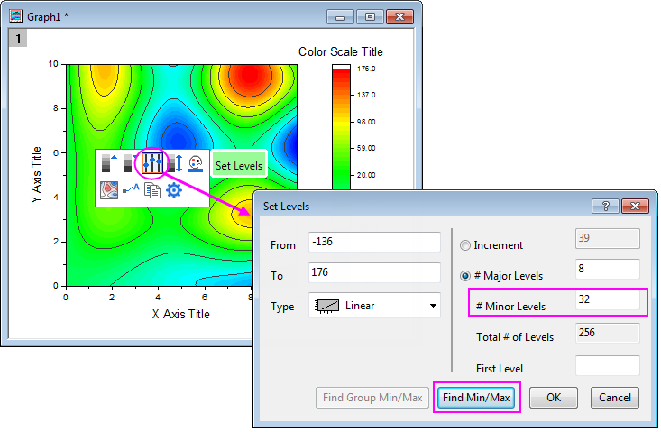
- Klicken Sie auf das Konturdiagramm und dann auf die Schaltfläche Paletten in den Minisymbolleisten. Wählen Sie dann die Palette Rainbow in der Auswahlliste.
- 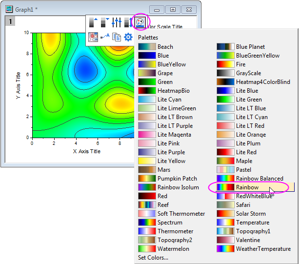
- Klicken Sie zweimal auf eine Konturlinie (zwei separate einzelne Klicks), um alle Linien auf dieser Ebene auszuwählen. Legen Sie danach die Farbe mit Hilfe der Schaltfläche Linien-/Rahmenfarbe 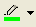 auf der Symbolleiste Format mit Grün fest. Setzen Sie auch die Breite mit Hilfe der gleichen Symbolleiste und der Schaltfläche Linien-/Rahmenbreite 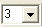 auf 3.
- 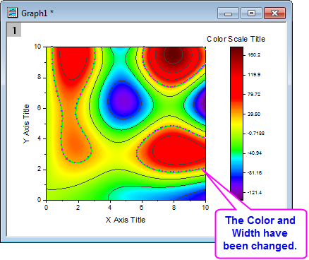
- Stellen Sie sicher, dass nur eine Konturlinie ausgewählt ist (nicht alle Konturlinien auf dieser Ebene) und klicken Sie mit der rechten Maustaste auf diese markierte Konturlinie. Wählen Sie Konturbeschriftung hinzufügen, um eine Beschriftung hinzuzufügen.
- 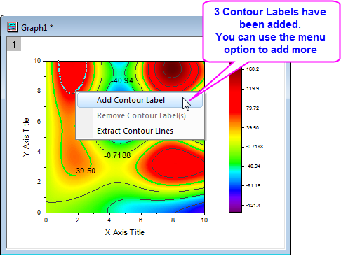
- Klicken Sie zweimal auf eine Konturlinie, um sie auszuwählen, dann mit der rechten Maustaste und wählen Sie Konturlinien extrahieren. Origin extrahiert die Daten für die Konturlinie in ein Arbeitsblatt. Das folgende Bild zeigt einen Teil der Daten im Arbeitsblatt.
- 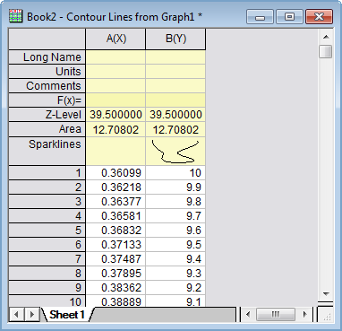
Konturdiagramm aus XYZ-Daten erstellen
Origin kann Konturdiagramme direkt und ohne eine Zwischenmatrix aus den XYZ-Daten in einem Arbeitsblatt erstellen. Die Delaunay-Triangulation wird verwendet, um die Konturlinien zu berechnen und zu zeichnen.
- Öffnen Sie ein leeres Arbeitsblatt. Wählen Sie Hilfe: Ordner öffnen: Sample-Ordner ... im Menü, um den Ordner "Samples" zu öffnen. Öffnen Sie in diesem Ordner den Unterordner Matrix Conversion and Gridding. Dort befindet sich die Datei 3D XYZ.dat. Ziehen Sie diese Datei per Drag&Drop in das leere Arbeitsblatt, um sie zu importieren.
- Markieren Sie die dritte Spalte und klicken Sie mit der rechten Maustaste auf sie, um Setzen als: Als Z setzen auszuwählen. Wählen Sie dann Zeichnen: Kontur: Kontur - Farbabbildung, um ein Diagramm zu erzeugen, wie im folgenden Bild zu sehen:
- 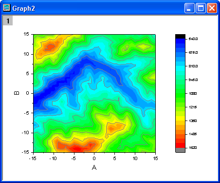
Triangulationsgitternetz zeigen
- Zeigen Sie das Triangulationsgitternetz an, das verwendet wird, um ein Konturdiagramm der Daten zu erstellen. Die einzelnen Datenpunkte befinden sich auf den Knoten oder Eckpunkten des Gitternetzes.
- Öffnen Sie ein leeres Arbeitsblatt. Wählen Sie Hilfe: Ordner öffnen: Sample-Ordner ... im Menü, um den Ordner "Samples" zu öffnen. Öffnen Sie in diesem Ordner den Unterordner Matrix Conversion and Gridding. Dort befindet sich die Datei XYZ Random Gaussian.dat. Ziehen Sie diese Datei per Drag&Drop in das leere Arbeitsblatt, um sie zu importieren.
- Markieren Sie die dritte Spalte und klicken Sie mit der rechten Maustaste auf sie, um Setzen als: Als Z setzen auszuwählen. Wählen Sie Zeichnen: Kontur: Kontur - Farbabbildung, um ein Konturdiagramm zu erstellen.
- 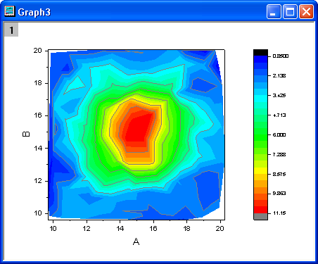
- Klicken Sie zum Öffnen des Dialogs Details Zeichnung doppelt auf das Konturdiagramm. Wechseln Sie zur Registerkarte Farbplatte/Kontur und klicken Sie auf die Überschrift Linie, um den Dialog Konturlinien zu öffnen. Deaktivieren Sie in diesem Dialog das Kontrollkästchen Nur auf Hauptebenen zeigen und aktivieren Sie Alle verbergen, um alle Konturlinien zu verbergen. Klicken Sie auf OK, um diesen Dialog zu schließen. Aktivieren Sie dann die Kontrollkästchen Gitterlinien zeigen und Datenpunkte zeigen auf der Registerkarte Farbpalette/Kontur. Bestätigen Sie mit OK, um den Dialog Details Zeichnung zu schließen.
- 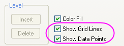
Das auf das Konturdiagramm gelegte Gitternetz sollte folgendermaßen aussehen:

Benutzerdefinierten Rahmen verwenden
Eine benutzerdefinierte Grenze kann auf Konturdiagramme angewendet werden, die direkt aus XYZ-Daten erzeugt wurden, wobei Anwender die Datenpunkte für die Grenze in zusätzlichen Spalten des gleichen Arbeitsblatts bereit stellen. Diese Funktion ist nützlich, wenn Sie spezielle Grenzdaten haben, die den Umfang eines Objekts definieren, wie beispielsweise das Profil eines Motors, während die Kontur die Motortemperatur zeigt.
- Wir fahren mit dem Arbeitsblatt und dem Konturdiagramm fort, das im vorherigen Beispiel mit XYZ Random Gaussian.dat erstellt wurde.
- Gehen Sie zur Arbeitsmappe XYZRandomGaus und klicken Sie zweimal auf die Schaltfläche Neue Spalten anhängen 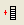, um zwei Spalten hinzuzufügen. Markieren Sie die zwei Spalten und klicken Sie mit der rechten Maustaste darauf. Wählen Sie Setzen als: XY XY im Kontextmenü und geben Sie vier Datenzeilen ein:
- Klicken Sie zum Öffnen des Dialogs Details Zeichnung doppelt auf das Konturdiagramm. Wechseln Sie zur Registerkarte Konturinfo im rechten Bedienfeld. Legen Sie die Werte in dem Dialog so fest, wie im folgenden Bild zu sehen, um die Grenze für das Konturdiagramm benutzerdefiniert anzupassen. Denken Sie daran, die Kontrollkästchen Gitternetzlinien zeigen und Datenpunkte zeigen auf der Registerkarte Farbpalette/Kontur zu deaktivieren. Klicken Sie auf OK, um den Dialog Details Zeichnung zu schließen.
-
- 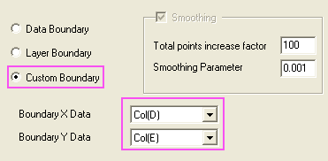
Das Diagramm sollte folgendermaßen aussehen:
- 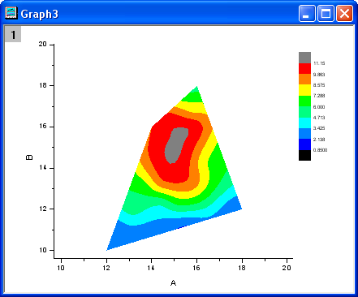
 |
Vor Origin 2018 SR0 erzeugte die Anwendung einer benutzerdefinierten Grenze manchmal eine imperfekte Füllung an den Rändern der Grenze. Dies wurde in 2018 verbessert. Der Anwender kann das vorherige Verhalten beim Füllen der Kontur mit Hilfe der Systemvariable @TCSM wiederherstellen.

|